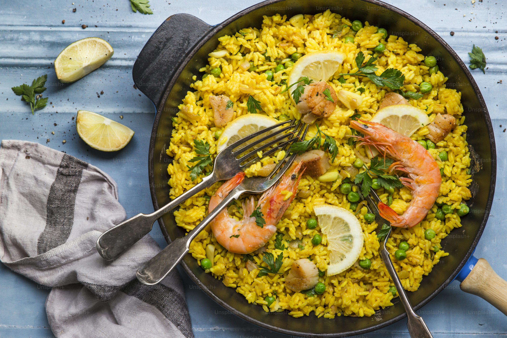
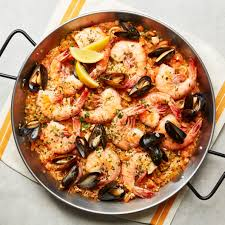
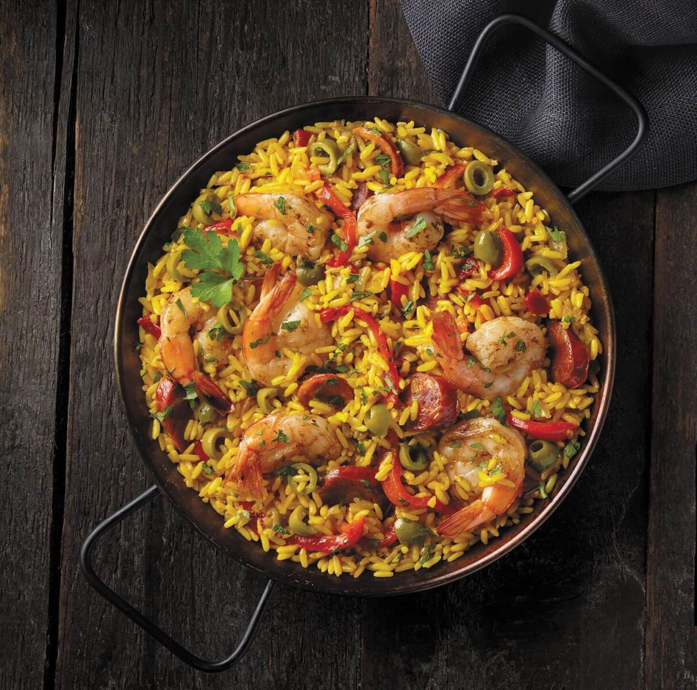

Paella Recipe



Description
Easy step-by-step instructions for cooking a traditional spanish meal - Paella.
It has ingredients like ckicken, shrimp, rice and other sea food.
A total time for cooking is 90 mins. Full size of meal is enough for 6 people.
Ingredients
- 4 tablespoons olive oil
- 1 onion, chopped
- 2 cloves garlic, minced
- 1 red bell pepper, chopped
- 4 ounces Spanish chorizo, casing discarded and cut into 1/4-inch dice
- 2 skinless, boneless chicken breast halves - cut into 1-inch cubes
- 1 (12 ounce) package uncooked Arborio rice
- 5 cups chicken broth
- ½ cup white wine
- 1 sprig fresh thyme
- 1 pinch saffron
- salt to taste
- ground black pepper to taste
- 2 squid, cleaned and cut into 1-inch pieces
- 2 tomatoes, seeded and chopped
- ½ cup frozen green peas
- 12 large shrimp, peeled and deveined
- 1 pound mussels, cleaned and debearded
- ¼ cup chopped Italian flat leaf parsley
- 8 slices lemon, for garnish
Steps
- Heat olive oil in paella pan over medium heat. Add onion, garlic, and pepper; cook and stir for a few minutes.
Add chorizo sausage, diced chicken, and rice; cook for 2 to 3 minutes. Stir in 3 ½ cups stock, wine, thyme leaves, and saffron.
Season with salt and pepper. Bring to the boil, and simmer for 15 minutes; stir occasionally.
- Taste the rice, and check to see if it is cooked. If the rice is uncooked, stir in ½ cup more stock.
Continue cooking, stirring occasionally. Stir in additional stock if necessary:
use up to 2 cups additional stock, 5 cups total. Cook until rice is done.
- Stir in squid, tomatoes, and peas. Cook for 2 minutes. Arrange prawns and mussels on top. Cover with foil, and leave for 3 to 5 minutes.
- Remove the foil, and scatter parsley over the food. Serve in paella pan, garnished with lemon wedges.